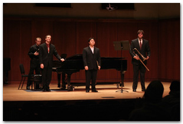

Benjamin graduated from Luther College with a Bachelor of Arts, majoring in Music and minoring in K-12 Instrumental and general music education. He was a student of Michael Smith, with whom he currently teaches beside at Luther, comprising the whole of the Low Brass Music Department. Ensembles participated in while studying at Luther include the following:
While teaching at Luther, Benjamin has lead multiple groups including the Trombone Choir, Trombone Ensemble, Tuba and Euphonium Ensemble. Additionally, he has been an advisor for many smaller, student lead ensembles.
Soon after acquiring his bachelor's at Luther, Benjamin received a Master's of Trombone Performance at the University of Illinois at Champaign-Urbana. The Ensembles participated in while studying at U of I include the following:
Besides working as adjunct low brass faculty at Luther College, Benjamin has also taught at the Calamus-Wheatland Community Schools in the band Department and Independence Community Schools in the band department. For his teaching practicum, Benjamin was at the John Cline Elementary Schools, teaching kindergarten music and at Cunningham Elementary School, teaching elementary music.
One star(*) next to the ensemble indicates an ensemble where Benjamin held Principle Trombone position. Two(**) denotes that he held the Bass Trombone position.
For a detailed resume, please contact Benjamin Yates at Benjamin.J.Yates@gmail.com.